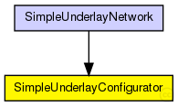
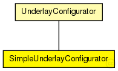

This documentation is released under the Creative Commons license
This documentation is released under the Creative Commons licenseConfigurator of the SimpleUnderlay
Sets up a SimpleNetwork, adds overlay nodes to the network in init phase periodically with the interval set by "initPhaseCreationInterval", adds/removes/migrates overlay nodes after init phase according to given churn model.
The following diagram shows usage relationships between types. Unresolved types are missing from the diagram. Click here to see the full picture.
The following diagram shows inheritance relationships for this type. Unresolved types are missing from the diagram. Click here to see the full picture.
| UnderlayConfigurator (simple module) |
UnderlayConfigurator base module |
| SimpleUnderlayNetwork (network) |
The SimpleUnderlay ned-file See also: SimpleUnderlayConfigurator |
| Name | Type | Default value | Description |
|---|---|---|---|
| terminalTypes | string |
list of terminal types |
|
| churnGeneratorTypes | string |
a list of churn generators to be used |
|
| transitionTime | double |
time to wait before measuring after init phase is finished |
|
| measurementTime | double |
duration of the simulation after init and transition phase |
|
| gracefulLeaveDelay | double |
time between prekill and removal from overlay |
|
| gracefulLeaveProbability | double |
probability of gracefull leave |
|
| fieldSize | double |
maximum x/y-coordinate for nodes |
|
| nodeCoordinateSource | string |
name of xml-file with coordinates of nodes |
|
| sendQueueLength | int |
send-queue length in bytes (0 = infinite) |
|
| fixedNodePositions | bool |
put nodes on fixed coordiantes in playground |
|
| useIPv6Addresses | bool |
| Name | Value | Description |
|---|---|---|
| display | i=block/cogwheel | |
| class | SimpleUnderlayConfigurator |
// // Configurator of the SimpleUnderlay // // Sets up a SimpleNetwork, adds overlay nodes to the network in init phase // periodically with the interval set by "initPhaseCreationInterval", // adds/removes/migrates overlay nodes after init phase according to given // churn model. // simple SimpleUnderlayConfigurator extends UnderlayConfigurator { parameters: @class(SimpleUnderlayConfigurator); double fieldSize; // maximum x/y-coordinate for nodes string nodeCoordinateSource; // name of xml-file with coordinates of nodes int sendQueueLength @unit(B); // send-queue length in bytes (0 = infinite) bool fixedNodePositions; // put nodes on fixed coordiantes in playground bool useIPv6Addresses; }
This documentation is released under the Creative Commons license